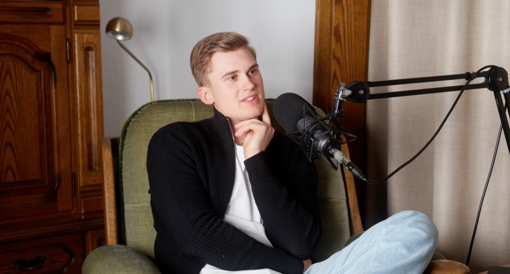

Über mich
Kurz zu mir.
Angefangen hat alles mit meinem eigenen Podcast. Ich rede gern mit Leuten und will verstehen wie andere denken. Daraus sind dann Videos geworden. Erst für mich, dann für andere.
Heute drehe ich überall mit, wo gerade was passiert. Der Rest ergibt sich.
Nebenbei: dritter Generation Hühnerhof. Anzefahr. Da komm ich her.

 ZUHAUSE
ZUHAUSE